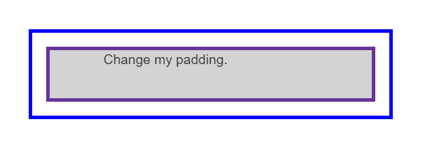

introduction
What is CSS ?
CSS (Cascading Style Sheets) is used to style and lay out web pages — for example, to alter the font, color, size, and spacing of your content, split it into multiple columns, or add animations and other decorative features. This module provides a gentle beginning to your path towards CSS mastery with the basics of how it works, what the syntax looks like, and how you can start using it to add styling to HTML. CSS (Cascading Style Sheets) allows you to create great-looking web pages, but how does it work under the hood? This article explains what CSS is with a simple syntax example and also covers some key terms about the language.
How CSS works
We have learned the basics of CSS, what it is for, and how to write simple stylesheets. In this article, we will take a look at how a browser takes CSS and HTML and turns that into a webpage
How CSS is structured
Now that you have an idea about what CSS is and the basics of using it, it is time to look a little deeper into the structure of the language itself. We have already met many of the concepts discussed here; you can return to this one to recap if you find any later concepts confusing.
Css Building blocks
Css selectors
| Class | The .class selector selects elements with a specific class attribute. To select elements with a specific class, write a period (.) character, followed by the name of the class. You can also specify that only specific HTML elements should be affected by a class. To do this, start with the element name, then write the period (.) character, followed by the name of the class. |
|---|---|
| Id | The id selector uses the id attribute of an html element to select a specific element. the id selector is used to select one unique element! To select an element with a specific id, write a hash (#) character, followed by the id of the element. |
The box model
display Inline and block
Below we have three different HTML elements, all of which have an outer display type of block. The first is a paragraph, which has a border added in CSS. The browser renders this as a block box, so the paragraph begins on a new line, and expands to the full width available to it.
The second is a list, which is laid out using display: flex. This establishes flex layout for the items inside the container, however, the list itself is a block box and — like the paragraph — expands to the full container width and breaks onto a new line.
Below this, we have a block-level paragraph, inside which are two elements . These elements would normally be inline, however, one of the elements has a class of block, and we have set it to display: block.
I am a short paragraph.
- Item One
- Item Two
- Item Three
I am another paragraph. Some of the words have been wrapped in a span element.
Margins, padding, and borders
Margin
The margin is an invisible space around your box. It pushes other elements away from the box. Margins can have positive or negative values. Setting a negative margin on one side of your box can cause it to overlap other things on the page. Whether you are using the standard or alternative box model, the margin is always added after the size of the visible box has been calculated.
We can control all margins of an element at once using the margin property, or each side individually using the equivalent longhand properties:
- margin-top
- margin-right
- margin-bottom
- margin-left
borders
The border is drawn between the margin and the padding of a box. If you are using the standard box model, the size of the border is added to the width and height of the box. If you are using the alternative box model then the size of the border makes the content box smaller as it takes up some of that available width and height.
To set the properties of each side individually, you can use:
- border-top
- border-right
- border-bottom
- border-left
Padding
The padding sits between the border and the content area. Unlike margins, you cannot have negative amounts of padding, so the value must be 0 or a positive value. Padding is typically used to push the content away from the border. Any background applied to your element will display behind the padding.
What is the CSS box model?
Making up a block box in CSS we have the:
- Content box: The area where your content is displayed, which can be sized using properties like width and height.
- Padding box: The padding sits around the content as white space; its size can be controlled using padding and related properties.
- Border box: The border box wraps the content and any padding. Its size and style can be controlled using border and related properties.
- Margin box: The margin is the outermost layer, wrapping the content, padding, and border as whitespace between this box and other elements. Its size can be controlled using margin and related properties.

Handling different text directions
What are writing modes?
A writing mode in CSS refers to whether the text is running horizontally or vertically. The writing-mode property lets us switch from one writing mode to another. You don't need to be working in a language which uses a vertical writing mode to want to do this — you could also change the writing mode of parts of your layout for creative purposes.
in the exemple below we used vertical-rl and vertical-tb to style our headings :
Heading
A paragraph. Demonstrating Writing Modes in CSS.
Heading
Css Responsive
Flexbox
In Flexbox, flex items will shrink and distribute space between the items according to the space in their container, as their initial behavior. By changing the values for flex-grow and flex-shrink you can indicate how you want the items to behave when they encounter more or less space around them.
Css grid
In CSS Grid Layout the fr unit allows the distribution of available space across grid tracks. The next example creates a grid container with three tracks sized at 1fr. This will create three column tracks, each taking one part of the available space in the container. You can find out more about this approach to create a grid in the Learn Layout Grids topic, under Flexible grids with the fr unit.
Media Querries
Responsive design was only able to emerge due to the media query. The Media Queries Level 3 specification became a Candidate Recommendation in 2009, meaning that it was deemed ready for implementation in browsers. Media Queries allow us to run a series of tests (e.g. whether the user's screen is greater than a certain width, or a certain resolution) and apply CSS selectively to style the page appropriately for the user's needs.
.png)